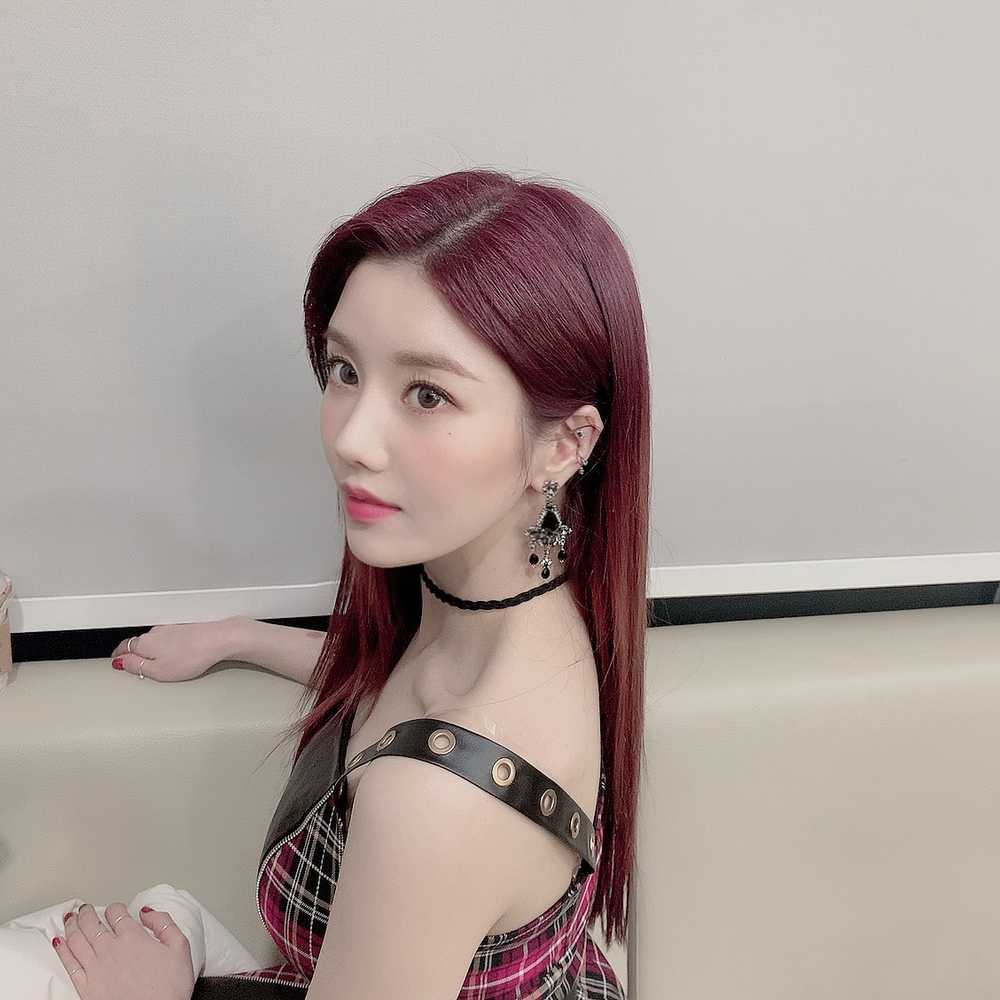
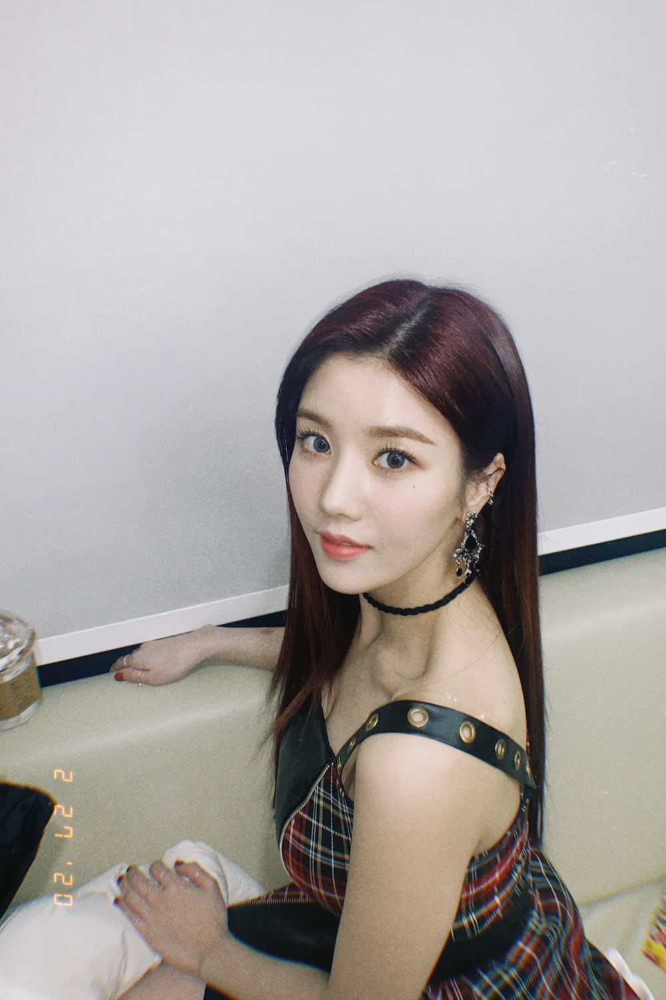

오늘도 소중한 하루 만들어줘서 고마워요 ! (//∇//)
오늘 하루는 어땠어요 ? ? ! 나는 너무 좋았는뎀...히
나 마음 정했어요 난 깐은비인거같아 . 덮은비 의견준 우리 위즈원 칭구들 미안해여 .. 가끔씩 덮은비 할게요..
위즈원 의견도 듣고 우리멤버들 의견도 들었는데 우리멤버들은 대부분이 깐은비야.. 나 이틀동안 앞머리 이야기만해서 미안햄 ㅎ 무튼 ! 그리고 고민이 하나 더 있슈.. 고민 들어줄겨..? 뭐냐믄 무슨 필터가 좋아여..? ㅋㅋㅋㅋㅋㅋㅋㅋㅋㅋㅋㅋㅋㅋㅋㅋㅋㅋㅋㅋㅋㅋㅋㅋㅋ히..
きょうもありがとうございます。
わたしはまえがみがありません。
まえがみ、ごめん。
どんなしゃしんがすきですか。

